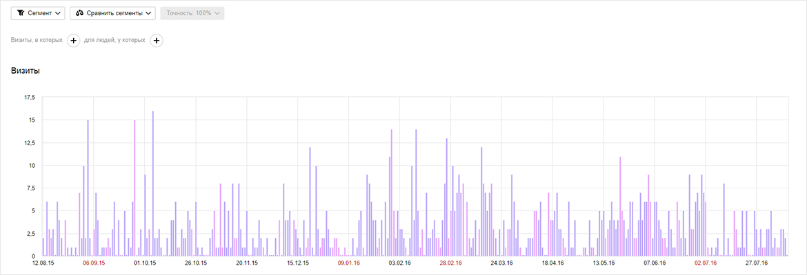

Руководство-игра: как заказчику демотивировать команду своего же проекта
15 сентября 2016
Кирилл Казакевич, технический директор
Чтоб сайт стоял и деньги были!
Примерно этого хочет любой заказчик своему же проекту — только хорошего.
Но иногда творит инферно вот этими вот руками, сам того не желая.
В этом добром и поучительном руководстве мы расскажем, как правильно
демотивировать команду своего проекта в нулину. Время тактики!
Практика показывает, что с каждым годом российские интернет-пользователи предпочитают
задавать поисковым системам все более и более многословные запросы.
Если верить статистике, короткие высокочастотные ключевики вводят
все реже: чаша весов склоняется в сторону более точных среднечастотных
и низкочастотных фраз.
Это сказалось и на предложениях SEO-компаний — все чаще клиентам предлагают
услугу увеличения посещаемости сайта, или, иными словами, продвижение
сайта по трафику.
Мы делаем так, чтобы о вашем бизнесе узнали многие.
- Организуем исследования, изучаем конкурентную среду и целевую аудиторию.
- Формулируем реальные и измеримые цели оптимизации для вашего бизнеса.
- Создаем семантическое ядро (список ключевых слов) и разрабатываем стратегию поискового продвижения.
- Работаем над внутренней и внешней оптимизацией сайта.
- Анализируем и отслеживаем результаты по достижению целей и при необходимости, корректируем стратегию.

Практика показывает, что с каждым годом российские интернет-пользователи
предпочитают задавать поисковым системам все более и более многословные
запросы. Если верить статистике, короткие высокочастотные ключевики вводят
все реже: чаша весов склоняется в сторону более точных среднечастотных и низкочастотных фраз.
Это сказалось и на предложениях SEO-компаний — все чаще клиентам предлагают
услугу увеличения посещаемости сайта, или, иными словами, продвижение
сайта по трафику.
15 сентября 2016
Руководство-игра: как заказчику демотивировать команду своего же проекта
Кирилл Казакевич, технический директор
15 сентября 2016
Руководство-игра: как заказчику демотивировать команду своего же проекта
Кирилл Казакевич, технический директор